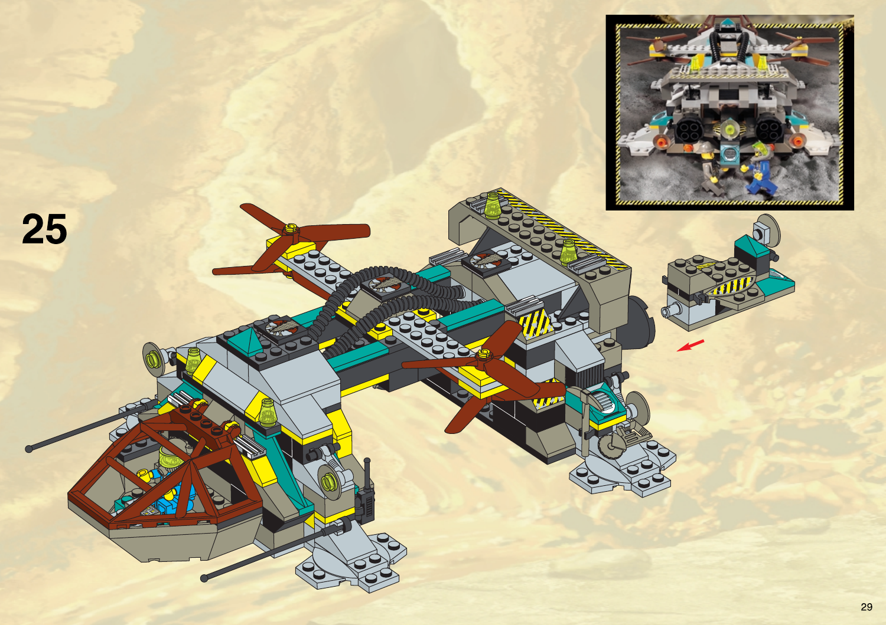
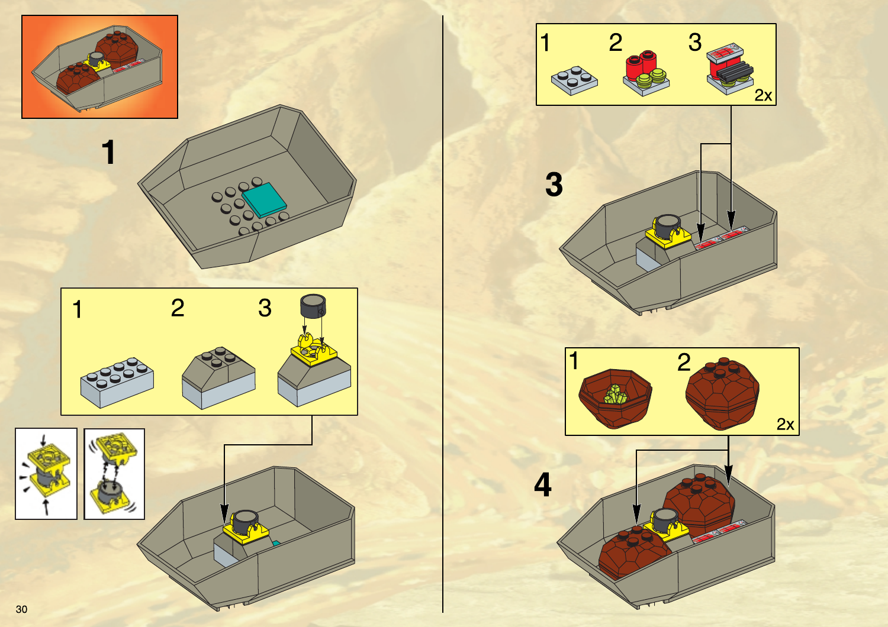
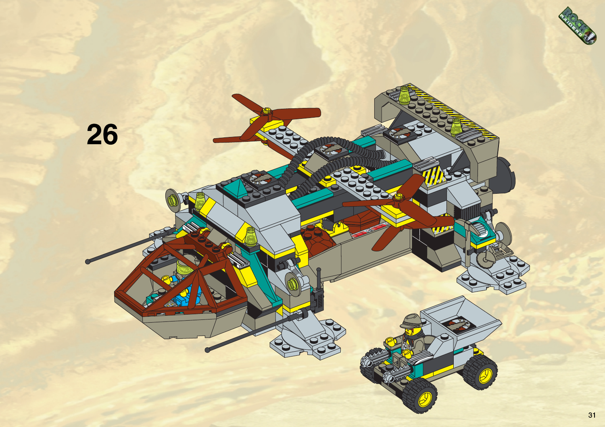
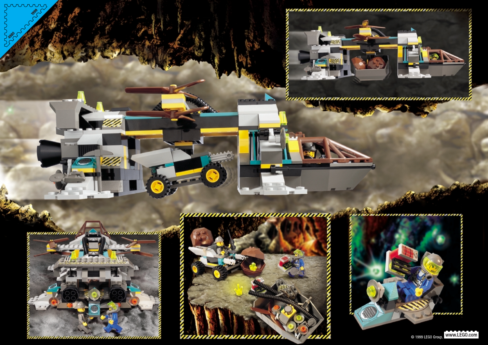

Rock Raiders · Tunnel Transport
This review separates the LEGO source, the accepted finished game appearance, its written design specification, and one non-authoritative load-path explanation.
1. Source Evidence · official LEGO 4980
The following are the existing, unmodified instruction-page rasters for official set 4980, from LEGO PDF 4128427.pdf. They establish the source silhouette and construction. They are reference evidence, not runtime textures or the loaded game target.

{kind=link}

{kind=link}

{kind=link}

{kind=link}

Exact source page hashes, official URL and PDF hash are recorded in tunnel_transport_source_evidence.json.
2. Production Design Target · ADAPTED
Accepted finished loaded appearance: retain the recognizable open 4980 twin-rotor lift bridge, and suspend one full-size Chrome Crusher visibly below its central frame on an open lower yoke.

Accepted Production Design Target v2, preserved unchanged. The previous v1 and prompt history remain in ArtSource/M85/T083/TunnelTransportLoadedV1. This is accepted target art, not LEGO source evidence or a production model.
- Keep the two separated rotor pods, source brown blades, broad open load-bearing frame, forward control module and source industrial proportions.
- Show the Chrome Crusher as a separate, recognizable unit; keep it horizontal at its own source scale.
- Add only the accepted paired short hangers and lower open yoke needed to show this carried state. Attach them to the central structural frame within the rotor supports.
- Do not make a closed fuselage, add rotors, recolor blades, hide the cargo inside the body, or interpret the illustrated extra figure as an approved crew change. A separate proposed team marker is not clearly represented in this target and is excluded pending its own decision.
3. Design Spec
The full unit sheet is the design spec: tunnel_transport.md. Its production directions retain the accepted M7 Final with outline on and use the Rock Raiders LEGO construction language: readable assembled brick masses, exposed mechanical framing, restrained turquoise/yellow accents and source brown rotor blades. The heavy-air silhouette must remain legible at RTS camera scale.
Visible game adaptation for this review: one lower open cargo yoke carrying the canonical heavy payload, Chrome Crusher. The carrier remains an open skeletal bridge and the load remains visibly separate. The precise yoke contact arrangement is shown only as a simplified load-path explanation below; exact connectors and clearances are T084 model work after approval.
Not changed: unit capacity, cargo rules, crew, movement, weapons, dimensions, or gameplay. No additional LEGO box-set modules become units.
4. NON-AUTHORITATIVE FOR APPEARANCE — technical explanation only
This simple side-view blockout explains the load path described by the spec. It is not a second appearance target, source evidence, approved part design, or source of exact geometry.
Bounded known gap: the target image's far upper attachment is visually occluded by a rotor support. The accepted design specifies both hangers connect under the central load-bearing frame, inside the rotor-pod span; neither hanger connects to a rotor, rotor support, or lamp. T084 must preserve this intended visible load path.
Director decision · ACCEPTED
The director approved the ADAPTED appearance on 2026-09-24: the open 4980-style carrier with one horizontal, visibly separate Chrome Crusher on a lower frame-supported yoke. The separately proposed team marker is excluded from this target.
Current gate: Production Design Target accepted; T084 authorized for Tunnel Transport only and has not started.